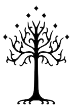

Middle Earth
Your adventure begins now.

Experience the wonder of Middle Earth!

Events and Festivals

Food and Drink

Outdoor Activities

Historical Sights
Now Trending
Give them nice little H4s.
prancing pony pic and the boys? Rivendell hotel? Experience the legendary hospitality of
Rivendell.

Plan Your Journey!

- UNDERLINE ABOVE THIS? Contact Us
- Travel Information
- Newsletter
- Business Tourism
- Industry Opportunities
- Terms of Use